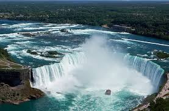
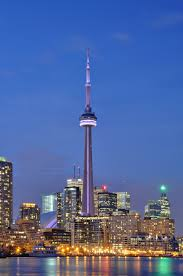
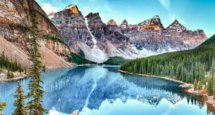
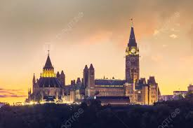

شلالات نياجرا من أشهر الشلالات في العالم وتقع على الحدود بين كندا والولايات المتحدة.
Niagara Falls is one of the most famous waterfalls in the world and lies on the border between Canada and the United States.

برج سي إن في تورونتو من أطول الأبراج في العالم ويوفر إطلالة رائعة على المدينة.
The CN Tower in Toronto is one of the tallest towers in the world and offers a stunning view of the city.

منتزه بانف الوطني يتميز بجباله وبحيراته الزرقاء ومناظره الطبيعية الخلابة.
Banff National Park is famous for its mountains, blue lakes, and breathtaking natural landscapes.

تل البرلمان في أوتاوا هو مقر البرلمان الكندي ويعد من أهم المباني السياسية في البلاد.
Parliament Hill in Ottawa is the seat of the Canadian Parliament and one of the most important political landmarks in the country.